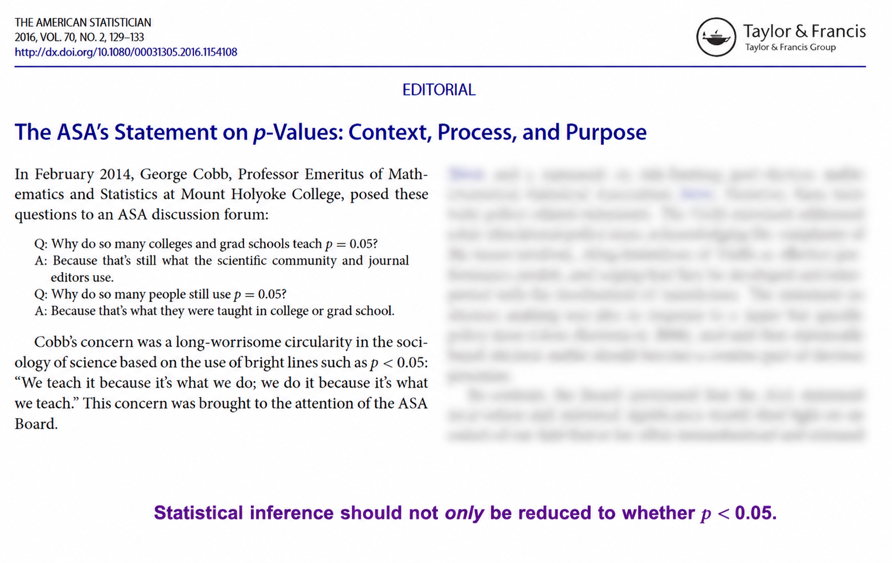
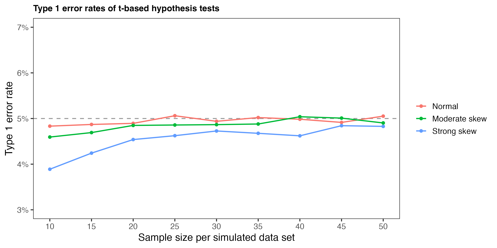

Untitled
Initial setup

What are we trying to learn?
Hypothesis testing is often used to make a binary decision:
Do we reject \(H_0\) or fail to reject \(H_0\)?
But often we care more about:
How large is the estimated difference or association?
How uncertain are we about that estimate?
Reducing the scientific finding to p<0.05 can obscure both.
Shift the focus from testing to estimation.
Revisiting our birth weight analysis with a focus on estimation of mean
A sample mean \(\bar{x}\) is our point estimate of the population mean \(\mu\).
But another random sample would give us a different estimate.
The standard error tells us how much \(\bar{x}\) varies from sample to sample.
A confidence interval uses this sampling variability to quantify the uncertainty in our estimate of \(\mu\).
Constructing a 95% confidence interval
From Lecture 2, we know that when \(\sigma\) is unknown, the standardized sample mean follows a t-distribution.
Let’s start by looking again at the t-distribution with \(df = n - 1\), which in our example is \(30 - 1 = 29\).
Find the critical value \(t_{crit}\) that captures the central 95%:
\[\large \Pr\left( -t_{crit} \leq \frac{\bar{X} - \mu}{S/\sqrt{n}} \leq t_{crit} \right) = 0.95\]
Calculate \(t_{crit}\) in base R:
So we now have
\[\large \Pr\left( -2.045 \leq \frac{\bar{X} - \mu}{S/\sqrt{n}} \leq 2.045 \right) = 0.95\]
And here it is visually:
Rearranging gives the 95% confidence interval:
\[\large \Pr\left( \bar{X} - 2.045\frac{S}{\sqrt{n}} \leq \mu \leq \bar{X} + 2.045\frac{S}{\sqrt{n}} \right) = 0.95\]
- \(\mu\) is fixed.
- \(\bar{X}\) and \(S\) vary from sample to sample.
- Therefore the confidence interval varies from sample to sample.
- 95% of the intervals generated by this procedure contain \(\mu\).
Calculating a 95% CI from a single data set
What happens if we repeat many times?
What does 95% confidence mean?
The general formulation of the 95% confidence interval is\[\text{estimate} \ \pm\ \text{critical value} \times \widehat{\mathrm{SE}}\]- The population mean\(\large \mu\)is fixed. - The interval changes from sample to sample. - About 95% of intervals constructed this way contain\(\large \mu\). - A particular interval either contains\(\large \mu\)or it does not.
95% confidence describes the long-run performance of the procedure, not a 95% probability that\(\large \mu\)lies in this particular interval.
The confidence interval quantifies the uncertainty around our estimate and gives a range of parameter values that are reasonably consistent with the observed data.
Revisiting Scenario 1: grip strength
In Lecture 2, we compared grip strength before and after rehabilitation by analyzing the within-person changes.
Now, rather than testing whether the mean change differs from 0, we want to estimate the mean change and quantify its uncertainty.\[\text{estimate} = \bar{x}_{\text{change}}, \qquad \widehat{\mathrm{SE}} = \frac{s_{\text{change}}}{\sqrt{n}}\]First recreate the data from Lecture 2:
Next estimate the 95% confidence interval manually:
We estimate that grip strength increased by 4.54 kg, with a 95% CI ranging from a 3.60 to a 5.47 kg increase.
Revisiting Scenario 2: LDL cholesterol
In Lecture 2, we compared LDL cholesterol between individuals randomized to statin therapy and those randomized to a healthy diet alone.
Now, rather than testing whether the population means differ, we want to estimate the difference and quantify its uncertainty.
\[ \large \text{estimate} = \bar{x}_{\text{statin}}-\bar{x}_{\text{diet}} \]
The estimated standard error is
\[\large \widehat{\mathrm{SE}} = \sqrt{ \frac{s_{\text{statin}}^2}{n_{\text{statin}}} + \frac{s_{\text{diet}}^2}{n_{\text{diet}}} } \]
First recreate the data from Lecture 2:
Next estimate the 95% confidence interval manually:
And compare with R:
The estimated mean difference (statin − diet) was −21.2 mg/dL (95% CI: −32.3 to −10.1 mg/dL).
Relaxing the assumption of normality
The usual small-sample t-test results are exact when the populations are normally distributed.
But how well does the t-test perform when the populations are not normal?
We can use simulation to examine how the t-test behaves when the populations are not normally distributed.
How robust is the two-sample t-test?
We can use simulation to examine how the t-test behaves when its normality assumption is violated.
For each simulation:
- Generate two independent samples from the same population.
- Conduct a two-sample Welch t-test at \(\alpha = 0.05\).
- Record whether the null hypothesis is rejected.
- Repeat the process many times.
Because the two samples come from the same population, the null hypothesis is true.
If the test is performing as expected, it should incorrectly reject the null hypothesis about 5% of the time
We repeat this across different population distributions and sample sizes:
Running the experiment with different sample sizes

What do we see?
- When the populations are normal, the Type I error rate is close to the intended 5%.
- Moderate skew has relatively little effect on the performance of the test.
- With the strongly skewed population used here, the test is conservative at very small sample sizes.
- As the sample size increases, the Type I error rate approaches 5%.
The two-sample t-test can be quite robust to non-normality. Non-normality alone is not necessarily a reason to abandon t-based methods.
Rank-based methods
An alternative way to compare two populations
The t-test compares population means using the actual outcome values.
An alternative is to compare the relative ordering of observations between groups without allowing a few extreme values to dominate the comparison.
The Wilcoxon rank-sum test compares the relative ordering of observations:
- Combine the observations from the two groups.
- Rank them from smallest to largest.
- Keep track of which group each observation came from.
- Compare the ranks between the two groups.
If observations from one population tend to be larger, they will tend to have higher ranks.
The Wilcoxon rank-sum test is not simply a t-test for non-normal data—it provides a different way of comparing two populations.
The test uses ranks to assess whether observations from one population tend to be larger or smaller than observations from the other.
When the distributions have the same shape, the comparison can be interpreted as a test of a location shift.
In many settings, the t-test and Wilcoxon rank-sum test …
will lead to the same practical conclusion. For example, if a treatment generally shifts outcomes upward, it will usually increase both the population mean and the tendency for treated observations to be higher than control observations.
But the two comparisons can diverge when treatment changes the distribution in more complicated ways:
- A treatment might produce very large improvements in a small number of patients, substantially increasing the mean without making outcomes better for most patients.
- A treatment might primarily change the variability of the outcome, without substantially changing either the mean or the tendency for observations in one group to be higher.
The scientific question should determine what kind of difference between the populations we care about; the observed shape of the data should not simply determine which test we use.
A simple data example
Here is a simple data example that gives a little insight into the ranking, and analyzes the data using wilcox.test:
The data suggest that observations from Group 2 tend to be larger than observations from Group 1.
Binary outcomes - estimating a population proportion
For a binary outcome, each observation can take one of two values, such as:
- Yes / No
- Success / Failure
- Event / No event
For a binary outcome \(X\),
\[\large E(X) = p \qquad\text{and}\qquad \operatorname{Var}(X) = p(1-p). \]
Since the sample proportion \(\hat{p}\) is simply the mean of \(n\) binary observations,
\[\large \hat{p} = \frac{1}{n}\sum_{i=1}^n X_i,\]
its variance is
\[\large \operatorname{Var}(\hat{p}) = \frac{p(1-p)}{n}.\]
A sample proportion is simply a sample mean when the outcome is coded 0/1.
Since \(\hat{p}\) is a sample mean, the Central Limit Theorem applies.
For sufficiently large samples, the sampling distribution of \(\hat{p}\) is approximately normal, with estimated standard error
\[\large \widehat{\mathrm{SE}}(\hat{p}) = \sqrt{ \frac{\hat{p}(1-\hat{p})}{n} }.\]
This gives us the familiar form for a 95% confidence interval:
\[\large \text{estimate} \ \pm\ \text{critical value} \times \widehat{\mathrm{SE}}\]
or, using the normal approximation,
\[\large \hat{p} \ \pm\ 1.96 \sqrt{ \frac{\hat{p}(1-\hat{p})}{n} }\]
The confidence interval quantifies the uncertainty around our estimate of the population proportion.
When is the normal approximation reasonable?
The normal approximation works best when there are sufficient numbers of both possible outcomes.
A common rule of thumb is to have at least 10 observed events and 10 observed non-events:
\[\large n\hat{p} \geq 10 \qquad\text{and}\qquad n(1-\hat{p}) \geq 10.\]
This is a guideline, not a threshold. The quality of the approximation changes gradually and depends on both the sample size and the population proportion.
When one of the outcomes is rare, a much larger sample may therefore be needed for the normal approximation to work well.
A simple example
Suppose 40 of 100 patients experience an outcome.
This is the 95% confidence interval using the normal approximation described above.
Based on this sample, we estimate that 40% of the population experiences the outcome, with a 95% confidence interval of approximately 30% to 50%.
In practice, we can use prop.test() in R:
prop.test() uses a score-based approach rather than the simple interval calculated above. By default, it also applies a continuity correction.
Comparing two population proportions
We are conducting a behavioral experiment on rats and want to compare trial success rates across two groups.
- In Group 1, 35 of 48 rats complete the test successfully.
- In Group 2, 27 of 52 rats complete the test successfully.
How much does the probability of success differ between the two populations?
The estimated success proportions are
\[\large \hat{p}_1 = \frac{35}{48} = 0.729\] and
\[\large \hat{p}_2 = \frac{27}{52} = 0.519.\]
The estimated difference in proportions is
\[\large \hat{p}_1-\hat{p}_2 = 0.729-0.519 = 0.210. \]
So the observed success rate is about 21 percentage points higher in Group 1.
Confidence interval for the difference
The estimated standard error is
\[ \widehat{\mathrm{SE}}(\hat{p}_1-\hat{p}_2) = \sqrt{ \frac{\hat{p}_1(1-\hat{p}_1)}{n_1} + \frac{\hat{p}_2(1-\hat{p}_2)}{n_2} }. \]
We estimate that the success probability is about 21 percentage points higher in Group 1, with a 95% confidence interval ranging from 2.5 to 39.5 percentage points higher.
Testing equality of two population proportions
We can also test \[ \large H_0:p_1=p_2 \]
against
\[\large H_A:p_1\neq p_2. \]
Under the null hypothesis, the two populations have a common proportion \(p\).
We estimate this common proportion by pooling the observations from the two groups:
\[ \large \hat{p} = \frac{x_1+x_2}{n_1+n_2}. \]
The standard error under the null hypothesis is
\[ \large \widehat{\mathrm{SE}}_0 = \sqrt{ \hat{p}(1-\hat{p}) \left( \frac{1}{n_1} + \frac{1}{n_2} \right) }. \]
The test statistic is therefore
\[ \large z = \frac{ (\hat{p}_1-\hat{p}_2)-0 }{ \widehat{\mathrm{SE}}_0 }.\]> For the confidence interval, we estimate variability using the observed proportion in each group. For the hypothesis test, we estimate variability assuming the null hypothesis is true:\(\large p_1=p_2\).
The comparison can be conducted using prop.test():
prop.test() applies a continuity correction by default. We turn it off here so that the R calculation corresponds directly to the z-test described above.
Contingency tables
The same data can also be represented using a contingency table:
| Success | Failure | Total | |
|---|---|---|---|
| Group 1 | 35 | 13 | 48 |
| Group 2 | 27 | 25 | 52 |
| Total | 62 | 38 | 100 |
The question remains exactly the same:
Is success associated with group?
The observed success rates are\[\hat{p}_1 = \frac{35}{48} = 0.729 \qquad\text{and}\qquad \hat{p}_2 = \frac{27}{52} = 0.519.\]The success rates differ in our sample. The question is whether this difference is larger than we would expect from sampling variability if group and outcome were not associated.
Expected counts under no association
In total, 62 of the 100 rats were successful, giving an overall success rate of\[\hat{p} = \frac{62}{100} = 0.62.\]If group and outcome were not associated, we would expect this same success rate of 62% in both groups.
For Group 1, we would therefore expect
\[ \large 48(0.62) = 29.76 \] successes and
\[ \large 48(0.38) = 18.24 \] failures.
For Group 2, we would expect
\[ \large 52(0.62) = 32.24 \] successes and
\[\large 52(0.38) = 19.76 \] failures.
This gives the expected counts:
| Success | Failure | Total | |
|---|---|---|---|
| Group 1 | 29.76 | 18.24 | 48 |
| Group 2 | 32.24 | 19.76 | 52 |
| Total | 62 | 38 | 100 |
More generally, the expected count for each cell can be calculated as
\[ \large E_{ij} = \frac{ (\text{row total})(\text{column total}) }{ \text{grand total} }. \] Under no association, the expected outcome distribution is the same in both groups:
Comparing observed and expected counts
We now compare what we observed with what we would expect if group and outcome were not associated.
For each cell, its contribution to the chi-square statistic is
\[ \large \frac{(O_{ij}-E_{ij})^2}{E_{ij}}, \] where \(O_{ij}\)is the observed count and \(E_{ij}\) is the expected count.
- Squaring ensures that deviations in either direction contribute positively.
- Dividing by the expected count scales the discrepancy relative to the size of the expected count.
For our data:
| Success | Failure | |
|---|---|---|
| Group 1 | \(\frac{(35-29.76)^2}{29.76}\) | \(\frac{(13-18.24)^2}{18.24}\) |
| Group 2 | \(\frac{(27-32.24)^2}{32.24}\) | \(\frac{(25-19.76)^2}{19.76}\) |
which gives
| Success | Failure | |
|---|---|---|
| Group 1 | 0.923 | 1.505 |
| Group 2 | 0.852 | 1.390 |
The chi-square statistic adds these contributions across all cells:
\[ \large \chi^2 = \sum_{i,j} \frac{(O_{ij}-E_{ij})^2}{E_{ij}} = 4.669. \] > The larger the differences between the observed and expected counts, the larger the chi-square statistic.
From the chi-square statistic to a p-value
If group and outcome are not associated, the chi-square statistic has approximately a chi-square distribution.
The degrees of freedom for an \(r\times c\) contingency table are
\[ \large df=(r-1)(c-1). \]
For our \(2\times2\) table,
\[ \large df=(2-1)(2-1)=1. \]
Larger values of\(\large \chi^2\)indicate greater disagreement between the observed and expected counts.
Therefore, the p-value is the probability of observing a chi-square statistic at least as large as the one we observed, assuming the null hypothesis is true.
The shape of the chi-square distribution depends on the degrees of freedom. For our \(2 \times2\) table, \(df=1\). The shaded upper-tail area beyond our observed \(\chi^2 = 4.669\) is the p-value.
We can calculate the p-value in R:
Or we can perform the entire analysis directly from the contingency table using the R function chisq.test():
Continuity correction: For a\(\large 2 \times 2\)table, R applies Yates’ continuity correction by default. We omit it here so that the chi-square test corresponds directly to the two-proportion\(\large z\)-test described above.
Connection to the two-sample test of proportions
These are the same data and the same null hypothesis that we considered when comparing two population proportions.
For a \(2\times2\) table, \[\large z^2 = \chi^2.\] In our example, \[\large (2.161)^2 \approx 4.669.\]
Therefore, the two-sample \(z\)-test and the Pearson chi-square test give the same p-value when the continuity correction is not used.
For a binary outcome and two groups, the two-proportion\(z\)-test and the\(\large 2\times2\)chi-square test are two ways of looking at the same comparison.
Fisher’s exact test
The chi-square test compares observed and expected counts using an approximate chi-square distribution. This approximation may not work well when expected cell counts are small.
Fisher’s exact test takes a different approach.
Consider a small study with the following results:
| Success | Failure | Total | |
|---|---|---|---|
| Group 1 | 5 | 0 | 5 |
| Group 2 | 1 | 4 | 5 |
| Total | 6 | 4 | 10 |
Suppose there is no association between group and outcome.
Fisher’s exact test considers the marginal totals to be fixed:
- There are 5 observations in each group.
- There are 6 successes and 4 failures overall.
If group and outcome are not associated …
those 6 successes could have been distributed between the two groups in different ways simply by chance.
For example (and this is not something you would ever need to enumerate):
| Successes in Group 1 | Successes in Group 2 |
|---|---|
| 1 | 5 |
| 2 | 4 |
| 3 | 3 |
| 4 | 2 |
| 5 | 1 |
Fisher’s exact test calculates the probability of each possible table with these same marginal totals under the null hypothesis of no association.
The p-value is based on …
the probabilities of the observed table and other tables that are at least as inconsistent with the null hypothesis.
Rather than relying on a large-sample approximation, Fisher’s exact test calculates probabilities directly from the possible tables with the same marginal totals.
These probabilities are calculated using the hypergeometric distribution.
In R:
Paired binary outcomes
Suppose we want to compare two chemotherapy treatments, A and B, in a study that includes 200 patients.
The 100 patients receiving treatment A are matched with 100 patients receiving treatment B based on characteristics such as age and disease severity.
For each of the 100 matched pairs, we record the 5-year survival outcome of both patients.
| Treatment B: Survived | Treatment B: Did not survive | |
|---|---|---|
| Treatment A: Survived | 30 | 20 |
| Treatment A: Did not survive | 8 | 42 |
The observations in the two treatment groups are not independent: each patient receiving treatment A is paired with a patient receiving treatment B.
How should we compare the survival probabilities when the observations are paired?
Which pairs tell us about the difference?
The diagonal cells are concordant pairs: both members of the pair have the same outcome.
The off-diagonal cells are discordant pairs: the outcomes differ.
| Treatment B: Survived | Treatment B: Did not survive | |
|---|---|---|
| Treatment A: Survived | 30 | 20: A survives, B does not |
| Treatment A: Did not survive | 8: B survives, A does not | 42 |
The discordant pairs contain the information about whether the survival probabilities differ between treatments.
If the treatments have the same probability of survival, we would expect the two types of discordant pairs to occur equally often.
- A survives, B does not: 20 pairs
- B survives, A does not: 8 pairs
McNemar’s test asks whether the two types of discordant pairs occur equally often.
Where does this fit in the set of problems we’ve seen so far?
We have encountered the same distinction with continuous outcomes:
| Continuous outcome | Binary outcome | |
|---|---|---|
| Independent groups | Two-sample t-test | Two-proportion / chi-square test |
| Paired observations | Paired t-test | McNemar’s test |
Whether the outcome is continuous or binary, paired observations require an analysis that accounts for the pairing.
Comparing the treatments
The observed survival probabilities were
\[\large \hat p_A = \frac{50}{100}=0.50, \qquad \hat p_B = \frac{38}{100}=0.38. \]
The null and alternative hypotheses are:
$$ H_0: P() = P() \
H_A: P() P(). $$
We can test this hypothesis in R using the function mcnemar.test():
We can estimate the difference in survival probabilities and construct a 95% confidence interval that accounts for the matching using rdpairci() from the R package ratesci:
The estimated survival probability is 12 percentage points higher with treatment A than with treatment B (95% CI: 1.7 to 22.5 percentage points). The observed difference is inconsistent with the null hypothesis of equal survival probabilities (\(p = 0.038\)).